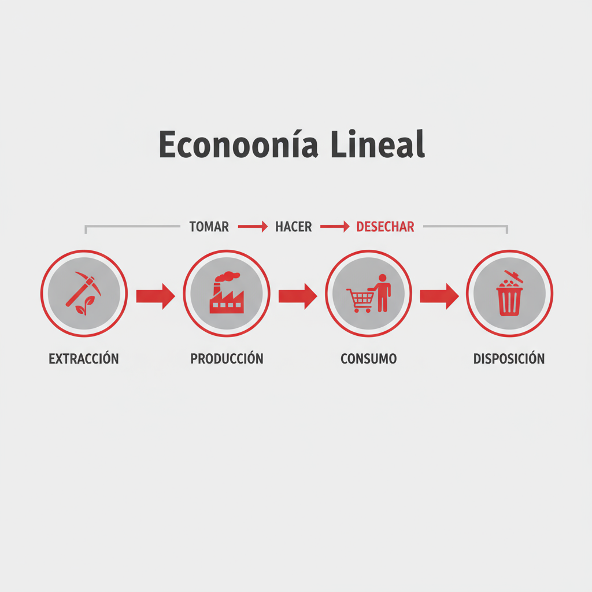
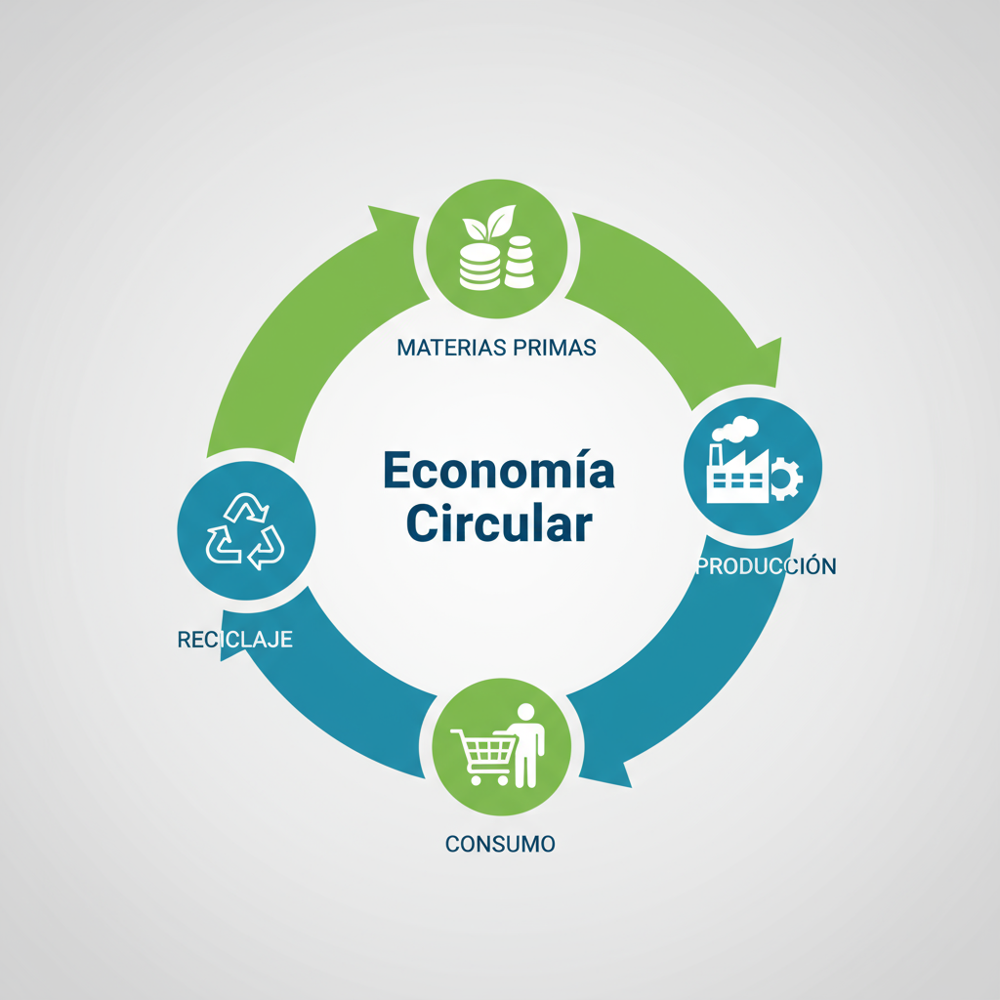

Introducción
La transición hacia una economía circular representa una necesidad imperante para abordar los desafíos del siglo XXI. Este modelo no solo es ambientalmente necesario sino también económicamente viable, requiriendo la colaboración entre empresas, consumidores y administraciones públicas.
La educación y los incentivos económicos son claves fundamentales para superar las barreras existentes en esta transición.
ACTIVIDAD 1: Análisis del Video "La Economía Circular en 4 Minutos"
Pregunta 1: Explicación de la Economía Circular y diferencias con la Economía Lineal
Según el video de Pixtin, la economía circular es un modelo que busca replantear la cadena productiva pensando en todos los procesos de manera global, donde en cada fase se tienen en cuenta las siguientes etapas. Se caracteriza por:
- Producir mejor en lugar de producir mucho
- Ahorrar al máximo en materiales
- Idear formas de rentabilizar los residuos generados
- Pensar en cómo podrían reutilizarse los productos tras su vida útil
En contraste, la economía lineal es un sistema económico pensado en "crear cosas para después tirarlas", donde cada proceso se rige exclusivamente por sus propios intereses y genera sus propios desechos.
Principales Diferencias:
Economía Lineal
- • Produce mucho para vender mucho
- • Depende de extracción continua
- • Genera residuos como producto final
- • Promueve obsolescencia programada
Economía Circular
- • Produce mejor y más eficiente
- • Reutiliza y recicla materiales
- • Convierte residuos en recursos
- • Diseña productos duraderos
Pregunta 2: Beneficios Económicos y Ambientales
Beneficios Económicos
- Reducción de costos: Las empresas reducen costos a través de reutilización y reciclaje de materiales
- Ahorro energético: El gran ahorro material y energético se traduce en precios finales más bajos
- Mayor competitividad: Las empresas sostenibles mejoran su posición en el mercado
Beneficios Ambientales
- Reducción de extracción: Se podría reducir las extracciones en un 70%
- Menor impacto ambiental: Minimiza la presión sobre ecosistemas y paisaje
- Reducción de residuos: Se puede evitar el 90% de los residuos
Pregunta 3: Barreras y Soluciones
Barrera Identificada
Los consumidores están obsesionados por tener siempre lo último y no se preocupan del origen ni del proceso de fabricación. Además, la mayoría de bienes no están pensados para ser recuperados.
Solución Propuesta
- • Educación: Programas de concienciación ciudadana
- • Incentivos: Sistemas que hagan más atractivo reparar que comprar
- • Regulación: Normativas para productos reciclables
Pregunta 4: Empresas de Zaragoza con Criterios de Economía Circular
Grupo SAICA
Actividad: Empresa líder en papel y cartón
Reconocimiento: Sello Aragón Circular (102,3/115 puntos)
Objetivo: Implementar principios de circularidad en toda su gestión
AITIIP Centro Tecnológico
Actividad: I+D en materiales biobasados y reciclaje enzimático
Enfoque: Transición verde y digital de la industria
Innovación: Materiales biológicos como alternativa al petróleo
ACTIVIDAD 2: Esquema Gráfico Comparativo
Economía Lineal
Flujo unidireccional: usar y tirar
Economía Circular
Ciclo cerrado: residuos como recursos
Características del Esquema Comparativo
Modelo Lineal (Izquierda)
- • Flujo unidireccional desde extracción hasta descarte
- • Proceso lineal y terminal
- • Generación de residuos como fin del ciclo
Modelo Circular (Derecha)
- • Ciclo cerrado con retroalimentación continua
- • Residuos se convierten en recursos
- • Proceso regenerativo y sostenible
Conclusión
La transición hacia una economía circular representa una necesidad imperante para abordar los desafíos del siglo XXI. Como demuestra el video de Pixtin y las empresas aragonesas pioneras en este campo, este modelo no solo es ambientalmente necesario sino también económicamente viable.
Factores Clave para el Éxito:
- • Colaboración entre empresas, consumidores y administraciones públicas
- • Educación y concienciación ciudadana como base del cambio
- • Incentivos económicos para facilitar la transición
- • Regulación que promueva productos diseñados para la circularidad